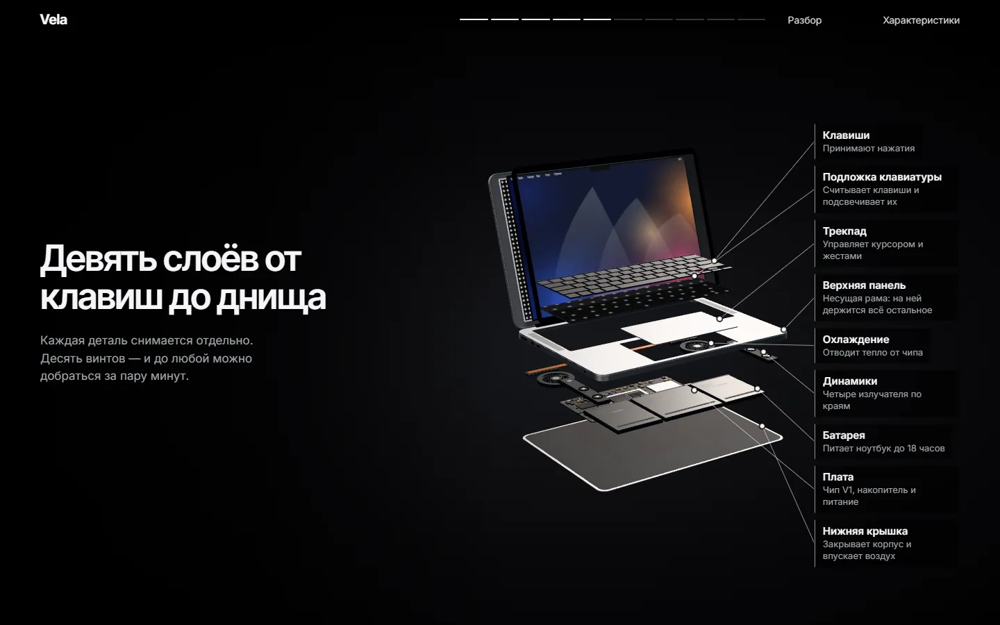

Экран раскладывается на слои
Стекло, матрица, подсветка и алюминиевая крышка расходятся в стороны. Сложное устройство объясняется одним движением.

Концепт: презентация ноутбука
Сайт для продукта, который нужно рассмотреть. Пока вы листаете, ноутбук открывается, расслаивается на детали и собирается обратно. У каждой детали подписано, за что она отвечает.
Стекло, матрица, подсветка и алюминиевая крышка расходятся в стороны. Сложное устройство объясняется одним движением.
Главный кадр: ноутбук разобран целиком, от каждой детали идёт линия к подписи. Подписи следуют за деталями, пока модель движется.

Камера подлетает к плате, и на первый план выходит чип с памятью и накопителем.